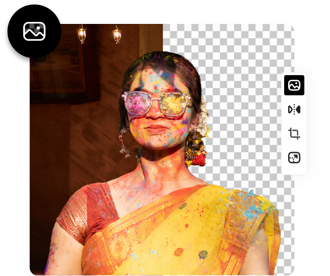

Two creative options.
No wrong choices.
Enjoy the power and precision of Photoshop with a free trial, or explore the simplicity and speed of Adobe Express for free, forever.
Adobe Photoshop is a raster graphics editor developed and published by Adobe Inc. for Windows and macOS. It was originally created in 1987 by Thomas and John Knoll. Since then, the software has become the most used tool for professional digital art, especially in raster graphics editing. The software's name is often colloquially used as a verb (e.g. "to photoshop an image", "photoshopping", and "photoshop contest") although Adobe discourages such use. Photoshop can edit and compose raster images in multiple layers and supports masks, alpha compositing and several color models. Photoshop uses its own PSD and PSB file formats to support these features. In addition to raster graphics, Photoshop has limited abilities to edit or render text and vector graphics (especially through clipping path for the latter), as well as 3D graphics and video. Its feature set can be expanded by plug-ins; programs developed and distributed independently of Photoshop that run inside it and offer new or enhanced features. Photoshop's naming scheme was initially based on version numbers. However, in October 2002 (following the introduction of Creative Suite branding), each new version of Photoshop was designated with "CS" plus a number; e.g., the eighth major version of Photoshop was Photoshop CS and the ninth was Photoshop CS2. Photoshop CS3 through CS6 were also distributed in two different editions: Standard and Extended. With the introduction of the Creative Cloud branding in June 2013 (and in turn, the change of the "CS" suffix to "CC"), Photoshop's licensing scheme was changed to that of software as a service subscription model. Historically, Photoshop was bundled with additional software such as Adobe ImageReady, Adobe Fireworks, Adobe Bridge, Adobe Device Central and Adobe Camera RAW. Alongside Photoshop, Adobe also develops and publishes Photoshop Elements, Photoshop Lightroom, Photoshop Express, Photoshop Fix, Adobe Illustrator, and Photoshop Mix. As of November 2019, Adobe has also released a full version of Photoshop for the iPad, and while initially limited, Adobe plans to bring more features to Photoshop for iPad.Collectively, they are branded as "The Adobe Photoshop Family".

Photoshop was developed in 1987 by two brothers, Thomas and John Knoll, who sold the distribution license to Adobe Systems Incorporated in 1988. Thomas Knoll, a Ph.D. student at the University of Michigan, began writing a program on his Macintosh Plus to display grayscale images on a monochrome display. This program (at that time called Display) caught the attention of his brother John, an Industrial Light & Magic employee, who recommended that Thomas turn it into a full-fledged image editing program. Thomas took a six-month break from his studies in 1988 to collaborate with his brother on the program. Thomas renamed the program ImagePro, but the name was already taken. Later that year, Thomas renamed his program Photoshop and worked out a short-term deal with scanner manufacturer Barneyscan to distribute copies of the program with a slide scanner; a "total of about 200 copies of Photoshop were shipped" this way. During this time, John traveled to Silicon Valley and gave a demonstration of the program to engineers at Apple Computer and Russell Brown, art director at Adobe. Both showings were successful, and Adobe decided to purchase the license to distribute in September 1988. While John worked on plug-ins in California, Thomas remained in Ann Arbor writing code. Photoshop 1.0 was released on February 19, 1990, for Macintosh exclusively. The Barneyscan version included advanced color editing features that were stripped from the first Adobe shipped version. The handling of color slowly improved with each release from Adobe and Photoshop quickly became the industry standard in digital color editing. When Photoshop 1.0 was released, digital retouching on dedicated high-end systems (such as the Scitex) cost around $300 an hour for basic photo retouching. The list price of Photoshop 1.0 for Macintosh in 1990 was $895. Photoshop was initially only available on Macintosh. In 1993, Adobe chief architect Seetharaman Narayanan ported Photoshop to Microsoft Windows. The Windows port led to Photoshop reaching a wider mass market audience as Microsoft's global reach expanded within the next few years. On March 31, 1995, Adobe purchased the rights for Photoshop from Thomas and John Knoll for $34.5 million so Adobe would no longer need to pay a royalty for each copy sold
Photoshop files have default file extension as .PSD, which stands for "Photoshop Document". A PSD file stores an image with support for all features of Photoshop; these include layers with masks, transparency, text, alpha channels and spot colors, clipping paths, and duotone settings. This is in contrast to many other file formats (e.g., .JPG or .GIF) that restrict content to provide streamlined, predictable functionality. A PSD file has a maximum height and width of 30,000 pixels, and a length limit of two gigabytes. From the beginning, Photoshop could save files in other formats, including TIF, JPEG, and GIF. These files are smaller than PSD files because they lack the editable features of a PSD file. These formats are required to use the file in publications or on the web. Adobe's discontinued program PageMaker required TIF format. Photoshop can also create and use files with the extension .PSB, which stands for "Photoshop Big" (also known as "large document format").A PSB file extends the PSD file format, increasing the maximum height and width to 300,000 pixels and the length limit to around 4 Exabytes. The dimension limit was apparently chosen arbitrarily by Adobe, not based on computer arithmetic constraints (it is not close to a power of two, as is 30,000) but for ease of software testing. PSD and PSB formats are documented. Because of Photoshop's popularity, PSD files are widely used and supported to some extent by most competing software, including GIMP and Affinity Photo. The .PSD file format can be exported to and from Adobe's other apps, such as Adobe Illustrator, Adobe Premiere Pro, and After Effects.
Photoshop functionality can be extended by add-on programs called Photoshop plugins (or plug-ins). Adobe creates some, such as Adobe Camera Raw, but most are developed by third-parties. Some are free and some are commercial software. Most plugins work with only Photoshop or Photoshop-compatible hosts, but a few can also be run as standalone applications. There are various types of plugins, such as filter, export, import, selection, color correction, and automation. The most popular plugins are the filter plugins (also known as a 8bf plugins), available under the Filter menu in Photoshop. Filter plugins can either modify the current image or create content. Below are some popular types of plugins, and some well-known companies associated with them: